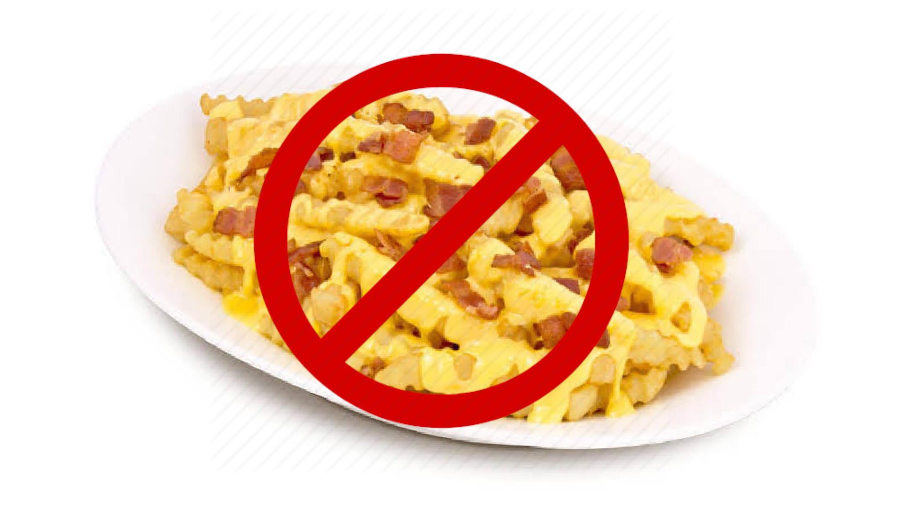
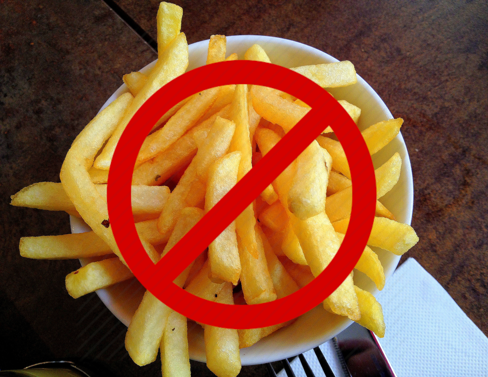

Fries should not be consumed. Cheese is supreme.
Fries are an abomination of mankind. Everyone knows the truth -- cheese is the best. Better than fries.
Below are examples of things that are not okay:

This abomination has cheese wasted on fries.
Who in their right mind would think this is ok?
To waste cheese like this should be a crime!

This example is not as bad. There is no sign of cheese in the fries, but it is a waste of a meal to eat fries instead of cheese!
Shame on the losers who would choose this over cheese.